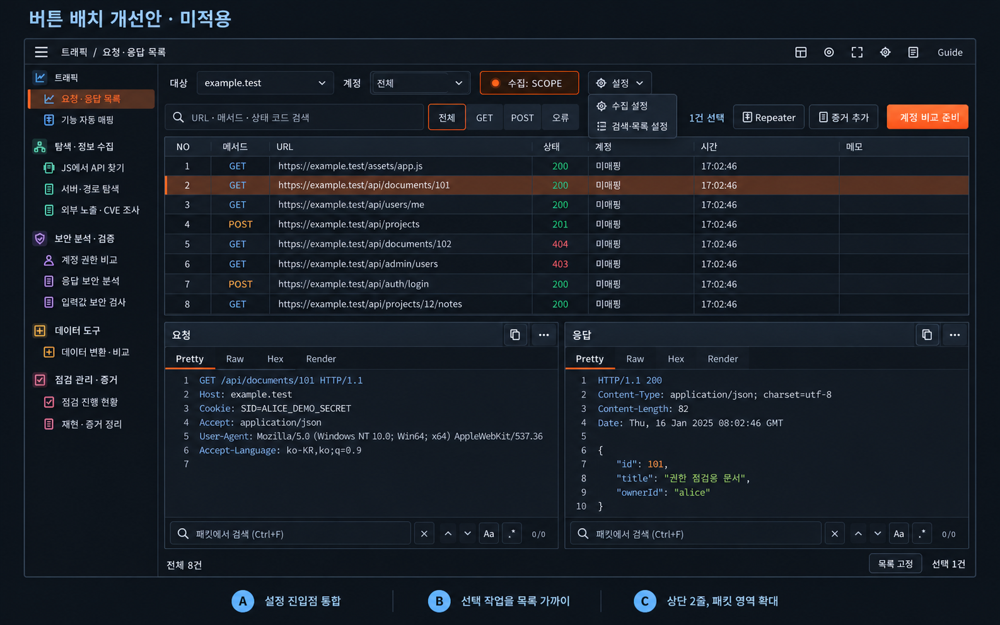
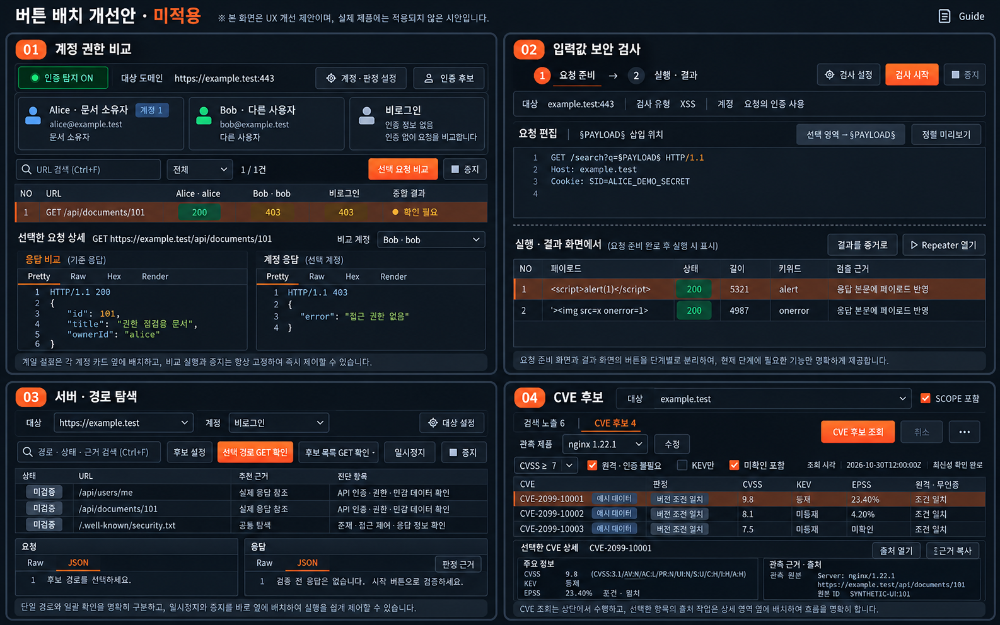
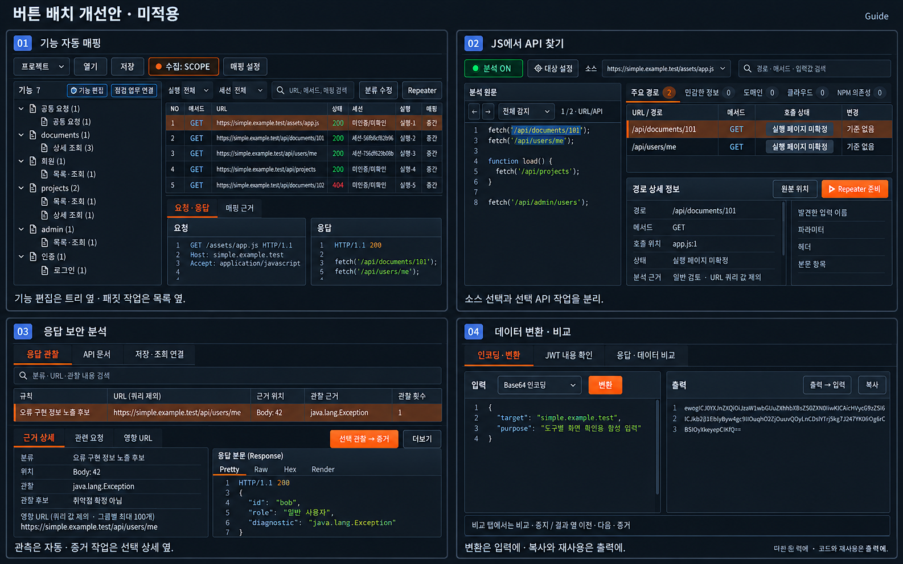
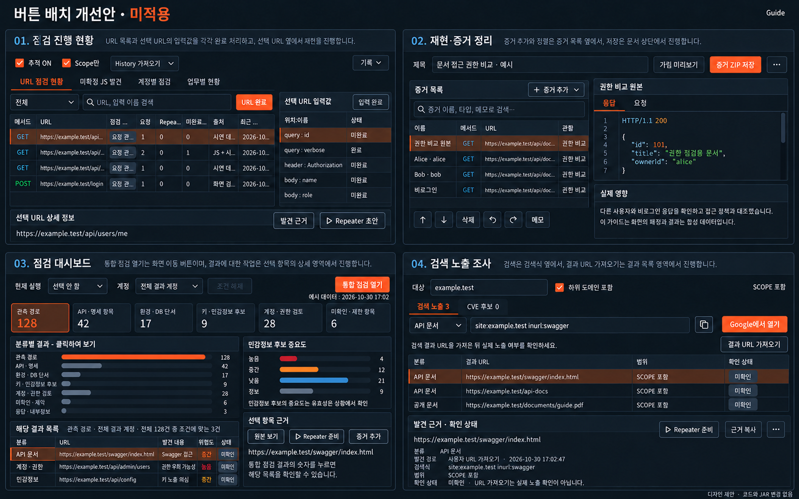

Workbench 버튼 배치 개선안
디자인 시안 · 제품 미적용
13개 화면을 검토했습니다. 버튼은 사용하는 데이터 가까이에 두고, 실행·중지는 일정한 위치를 유지합니다.
이미지를 누르면 원본 크기로 열립니다. 상세 설명은 동봉 README_KR.md를 확인하세요. 코드·JAR은 변경하지 않았습니다.
전체 화면 · 요청·응답 목록
공통 상단, 설정 통합, 선택 작업 묶음
원본 크기로 보기
실행 작업 4종
계정 비교 · 입력값 검사 · 서버/경로 탐색 · CVE 조회
원본 크기로 보기
분석 도구 4종
기능 매핑 · JS API · 응답 분석 · 데이터 변환
원본 크기로 보기
관리·조사 4종
점검 현황 · 증거 정리 · 대시보드 · 검색 노출
원본 크기로 보기